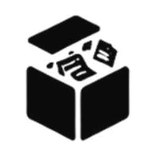

Drop it. Find it later.
Move files into your vault, or use the watched Inbox. Search by name and browse by file type.
↳ project-brief.pdf PDF document · 240 KB
A little breathing room for your files.
Collect the temporary, keep what matters, and let your desktop feel like yours again.

tempvaultA place for all of it.01 — YOUR VAULT, IN MINIATURE Sample files only. Explore, preview, keep, and rearrange.
The download you needed once. The draft you might need later. Give them somewhere to go.
Move files into your vault, or use the watched Inbox. Search by name and browse by file type.
Mark the important files as Kept. They’re protected from automatic cleanup, so you can focus on the rest.
Enable the optional auto-deleter and unkept files move to the Windows Recycle Bin after 14 days. Kept files stay safe.
Off by default. Recycled files can be restored from Windows while they remain in the Recycle Bin.
Turn on cleanup, then slide past day 14.
Your files live on your disk. The optional file assistant connects to Ollama on your own computer, with no cloud fallback.
TempVault moves imported files into the managed vault rather than keeping a duplicate at the original location. Use Keep and restore actions to manage their lifecycle. The website demo only changes fictional sample records.
The desktop app supports previews for common PDF, Word, PowerPoint, text, image, audio and video files where supported. Some formats or large files need to open in their default application.
Only if you enable the 14-day auto-deleter in Settings. It moves unkept files to the Windows Recycle Bin. Kept files are excluded; the feature is disabled by default.
Only to use the optional local assistant. Install Ollama and a compatible model, then configure it in TempVault. The file manager works without AI. This website’s assistant is a clearly labeled scripted demo.
Get the installer or portable version from GitHub Releases. Review the release notes and signing status there; SHA-256 checksums are provided with the release.
Free & open source. Entirely yours.